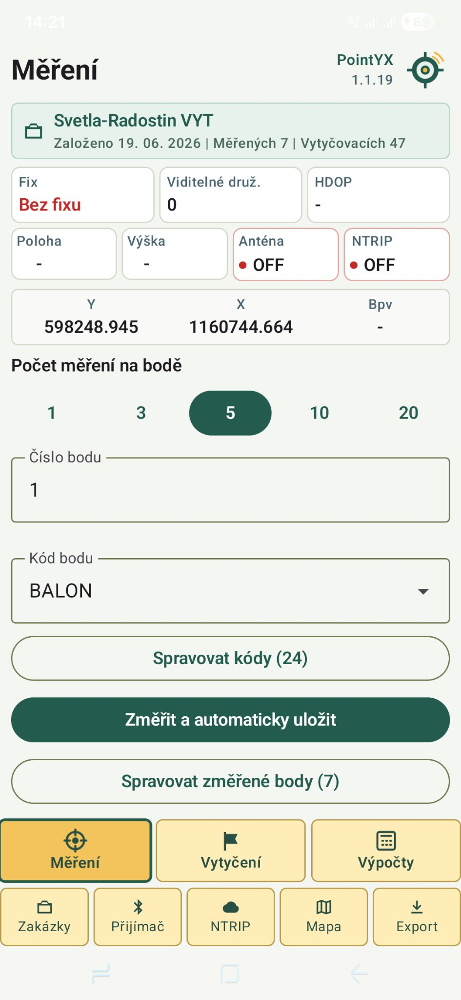
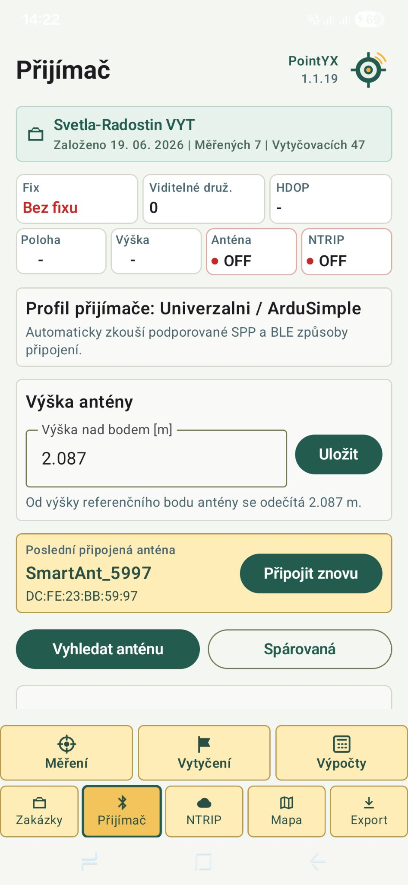
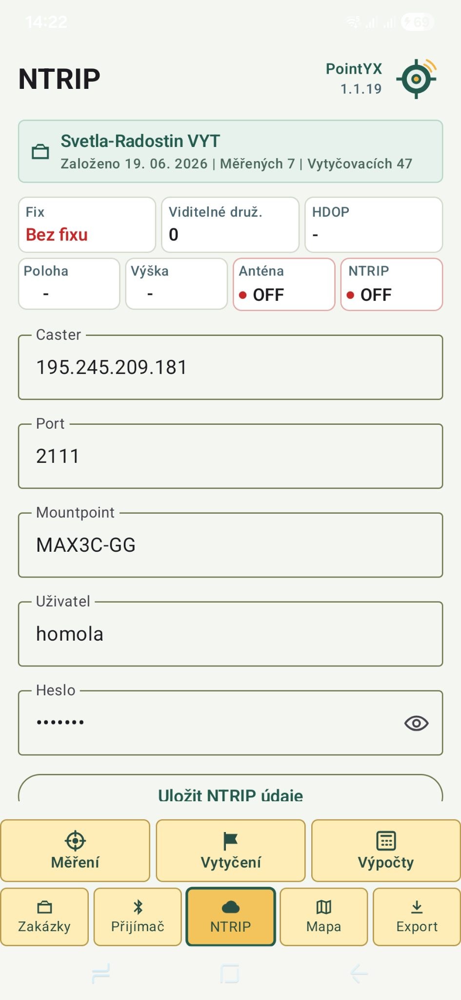

Měření bodů
Sběr bodů v terénu s přehlednou kontrolou přesnosti, stavu řešení a informací z přijímače.
Android • GNSS • RTK • NTRIP
PointYX pomáhá v terénu připojit GNSS přijímač, měřit body, vytyčovat souřadnice, pracovat s mapou a exportovat data do použitelných formátů.

Funkce
Jednoduché prostředí pro měření, kontrolu přijímače, NTRIP korekce, mapu, vytyčení a export.
Sběr bodů v terénu s přehlednou kontrolou přesnosti, stavu řešení a informací z přijímače.
Praktická navigace k bodu s rozdíly v poloze a jasným vedením při práci v terénu.
Připojení ke korekční službě přímo z aplikace bez složitého přepínání mezi nástroji.
Připojení externího GNSS přijímače přes Bluetooth a kontrola důležitých údajů.
Přehled bodů v mapě, práce v kontextu terénu a rychlá orientace na zakázce.
Výstupy pro další zpracování, včetně praktických formátů pro geodetickou a stavební praxi.
Aplikace
Screenshoty jsou vložené do menších telefonních náhledů, aby nerušily obsah a stránka zůstala přehledná.


Postup práce
Vyber GNSS zařízení přes Bluetooth a zkontroluj kvalitu řešení.
Nastav NTRIP profil a pracuj s RTK přesností v terénu.
Sbírej body, kontroluj mapu nebo naviguj k vytyčovanému bodu.
Připrav data pro další zpracování, dokumentaci nebo předání.
Pro koho
PointYX je navržený pro rychlé použití přímo venku. Bez složitých obrazovek, bez zbytečných voleb navíc, s důrazem na čitelnost a rychlost.
PointYX
PointYX je ve vývoji. Hledáme uživatele z praxe, kteří chtějí testovat GNSS měření a vytyčování na Androidu.
info@pointyx.com